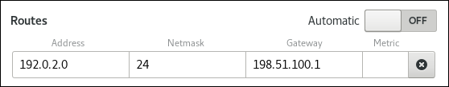
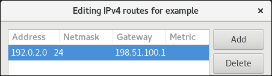
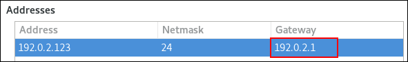
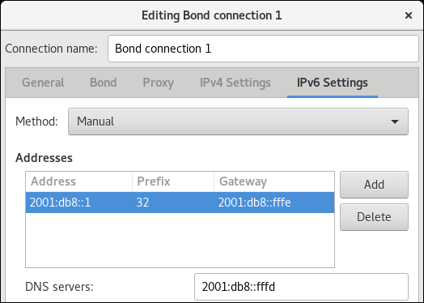
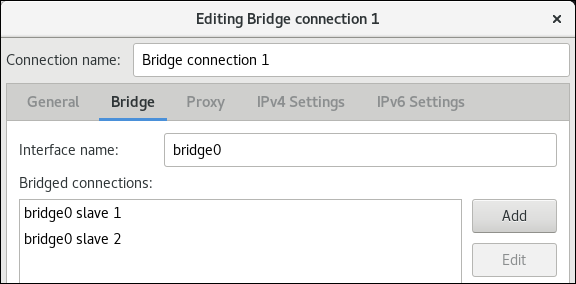
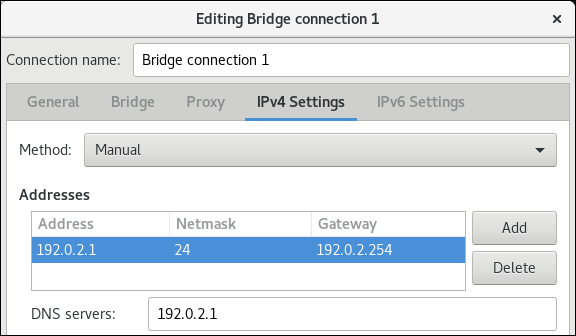
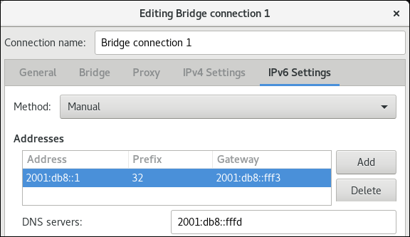
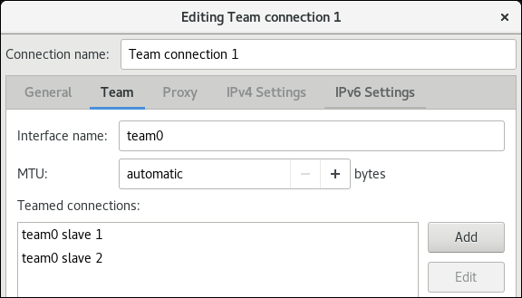
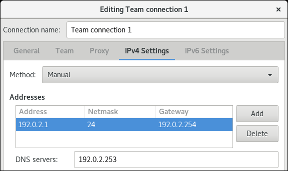
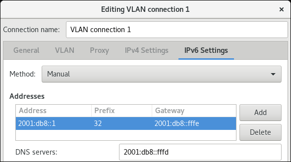

Chapter 9. 使用GNOME GUI配置网络
您可以使用以下图形用户界面 （ GUI ）方式配置网络接口：
- 桌面右上角的GNOME Shell 网络连接图标
- GNOME 控制中心应用程序
- GNOME nm-connection-editor应用程序
要访问Network设置，请单击屏幕右上角的GNOME Shell 网络连接图标以打开其菜单：
单击GNOME Shell网络连接图标时，您可以看到：
- 您当前连接到的分类网络列表（例如
Wired和Wi-Fi）。 - NetworkManager检测到的所有
Available Networks列表。如果您连接到网络，则会在连接名称的左侧显示。 连接到任何已配置的虚拟专用网络（VPN）的选项
和
- 用于选择“
Network Settings菜单项的选项。
您可以通过GNOME 控制中心应用程序创建网络连接，该应用程序是一个图形用户界面，提供可用网络设备及其当前配置的视图。
此过程描述如何使用控制中心创建新的wired ， wireless ， vpn连接：
程序

您可以通过GNOME 控制中心应用程序配置网络连接。
程序
- 按“ 超级”键进入“活动概览”，键入
Settings，按“ Enter” 。然后，选择左侧的Network菜单条目，将出现Network设置工具，请参阅打开网络设置窗口 选择
Wired网络接口默认情况下，系统会创建并配置一个名为
Wired的单个有线连接配置文件 。可以为界面创建多个配置文件，并根据需要应用。无法删除默认配置文件，但可以更改其设置。- 通过单击齿轮图标编辑现有连接或单击加号按钮编辑默认的
Wired配置文件，然后为新连接设置配置选项。
注意
通过单击加号按钮添加新连接时， NetworkManager将为该连接创建新配置文件，然后打开用于编辑现有连接的同一对话框。这些对话框之间的区别在于现有连接配置文件具有“ 详细信息”菜单条目。
基本配置选项
通过选择“ Identity菜单条目，可以在“ Wired对话框中看到以下配置设置：
-
Name- 输入网络连接的描述性名称。此名称将用于在“Network窗口的菜单中列出此连接。 -
MAC Address- 选择必须应用此配置文件的接口的MAC地址。 -
Cloned Address- 如果需要，请输入要使用的其他MAC地址。 -
MTU- 如果需要，输入要使用的特定最大传输单位 （ MTU ）。MTU值表示链路层将传输的最大数据包的大小（以字节为单位）。此值默认为1500，通常不需要指定或更改。
配置与控制中心连接的IPv4设置
您可以在有线连接中进一步配置IPv4设置。在“ Wired对话框中，单击IPv4菜单项：

IPv4菜单项允许您配置：
- 用于连接网络的
IPv4 Method -
DNS和 -
路线
IPv4方法
Automatic (DHCP) - 如果要连接的网络使用路由器公告（RA）或DHCP服务器分配动态IP地址，请选择此选项。
Link-Local Only - 如果要连接的网络没有DHCP服务器且您不想手动分配IP地址，请选择此选项。随机地址将根据RFC 3927分配，前缀为169.254/16 。
Manual - 如果要手动分配IP地址，请选择此选项。
Disable - 此连接Disable IPv4 。
DNS
在DNS部分中，当Automatic为ON 。将自动切换为OFF以输入要使用的DNS服务器的IP地址，用逗号分隔IP。
路线
注意
在“ Routes部分中，当“ Automatic为“ ON ，将使用来自路由器通告（RA）或DHCP的路由，但您也可以添加其他静态路由。OFF ，仅使用静态路由。
Address - 输入远程网络，子网或主机的IP地址。
网络Netmask - 上面输入的IP地址的网络掩码或前缀长度。
Gateway - 通向上面输入的远程网络，子网或主机的网关的IP地址。
Metric - 网络成本，为此路由提供的首选值。较低的值优先于较高的值。
仅将此连接用于其网络上的资源
选中此复选框可防止连接成为默认路由。典型的例子是连接是VPN隧道或到总部的租用线路，并且您不希望任何因特网绑定的流量通过该连接。选择此选项意味着只有专门用于通过连接自动学习或手动输入的路由的流量才会通过连接进行路由。
配置与控制中心连接的IPv6设置
或者，要在有线连接中配置IPv6设置，请单击IPv6菜单项：
IPv6菜单项允许您配置：
- 用于连接网络的
IPv6 Method -
DNS和 -
路线
IPv6方法
Automatic - 选择此选项可使用IPv6无状态地址自动配置（SLAAC）根据硬件地址和路由器公告（RA）创建自动无状态配置。
Automatic, DHCP only - 选择此选项不使用RA，但直接从DHCPv6请求信息以创建有状态配置。
Link-Local Only - 如果要连接的网络没有DHCP服务器且您不想手动分配IP地址，请选择此选项。随机地址将根据RFC 4862分配，前缀为FE80::0 。
Manual - 如果要手动分配IP地址，请选择此选项。
Disabled - 此连接Disabled IPv6 。
配置与控制中心连接的802.1X安全性
802.1X安全性是基于端口的网络访问控制 （ PNAC ）的IEEE标准的名称。它也被称为WPA Enterprise 。802.1X安全性是一种控制从物理网络访问逻辑网络的方法。所有想要加入逻辑网络的客户端都必须使用正确的802.1X身份验证方法对服务器（例如路由器）进行身份验证。
要在有线连接中配置802.1X Security设置，请单击“ Security菜单条目：

要启用设置配置，请将符号电源按钮设置为ON ，然后从以下任一身份验证方法中进行选择：
-
传输层安全性的
TLS，然后继续配置TLS设置 -
PWDfor Password并继续配置PWD设置 -
FAST通过安全隧道进行灵活身份验证，然后继续配置快速设置 - 选择
Tunneled TLSfor Tunneled Transport Layer Security ，也称为TTLS或EAP-TTLS，然后继续配置隧道TLS设置 - 为受保护的可扩展身份验证协议选择
Protected EAP (PEAP)，然后继续配置受保护的EAP PEAP设置
配置TLS设置
使用传输层安全性（TLS），客户端和服务器使用TLS协议进行相互身份验证。
使用TLS安全性需要公钥基础结构（PKI）的开销来管理证书。使用TLS安全性的好处是，受损密码不允许访问（W）LAN：入侵者还必须能够访问身份验证客户端的私钥。
NetworkManager不确定支持的TLS版本。NetworkManager收集用户输入的参数，并将它们传递给处理该过程的守护程序wpa_supplicant 。它反过来使用OpenSSL来建立TLS隧道。OpenSSL本身协商SSL / TLS协议版本。它使用最高版本两端支持。
要配置TLS设置，请按照“使用控制中心配置有线（以太网）连接”一节中描述的步骤进行操作 。可以使用以下配置设置：
身分- 提供此服务器的标识。
用户证书- 单击以浏览并选择使用可分辨编码规则 （ DER ）或隐私增强邮件 （ PEM ）编码的个人X.509证书文件。
CA证书- 单击以浏览并选择使用可分辨编码规则 （ DER ）或隐私增强邮件 （ PEM ）编码的X.509 证书颁发机构证书文件。
私钥- 单击以浏览并选择使用可分辨编码规则 （ DER ）， 隐私增强邮件 （ PEM ）或个人信息交换语法标准 （ PKCS＃12 ）编码的私钥文件。
私钥密码- 在
Private key字段中输入私钥的密码。选择“Show password可在键入密码时Show password。
配置PWD设置
使用密码（PWD），您可以指定用户名和密码。
用户名- 输入要在身份验证过程中使用的用户名。
密码- 输入要在身份验证过程中使用的密码。
配置FAST设置
要配置FAST设置，请按照“使用控制中心配置有线（以太网）连接”一节中描述的步骤进行操作 。可以使用以下配置设置：
匿名身份- 提供此服务器的标识。
允许自动PAC配置- 选中该复选框以启用，然后从“匿名”，“已验证”和“两者”中进行选择。
PAC文件- 单击以浏览并选择受保护的访问凭据 （ PAC ）文件。
内部认证GTC- 通用令牌卡。MSCHAPv2- Microsoft质询握手身份验证协议版本2。用户名- 输入要在身份验证过程中使用的用户名。
密码- 输入要在身份验证过程中使用的密码。
配置隧道TLS设置
要配置隧道TLS设置，请按照“使用控制中心配置有线（以太网）连接”一节中描述的步骤进行操作 。可以使用以下配置设置：
匿名身份- 此值用作未加密的标识。
CA证书- 单击以浏览并选择证书颁发机构的证书。
内部认证PAP- 密码验证协议。MSCHAP- 挑战握手认证协议。MSCHAPv2- Microsoft质询握手身份验证协议版本2。MSCHAPv2 (no EAP)- 没有广泛身份验证协议的Microsoft质询握手身份验证协议版本2。CHAP- 质询握手身份验证协议。MD5- 消息摘要5，加密散列函数。GTC- 通用令牌卡。用户名- 输入要在身份验证过程中使用的用户名。
密码- 输入要在身份验证过程中使用的密码。
配置受保护的EAP（PEAP）设置
要配置受保护的EAP（PEAP）设置，请按照“使用控制中心配置有线（以太网）连接”一节中描述的过程进行操作 。可以使用以下配置设置：
匿名身份- 此值用作未加密的标识。
CA证书- 单击以浏览并选择证书颁发机构的证书。
PEAP版本- 要使用的受保护EAP版本。自动，0或1。
内部认证MSCHAPv2- Microsoft质询握手身份验证协议版本2。MD5- 消息摘要5，加密散列函数。GTC- 通用令牌卡。用户名- 输入要在身份验证过程中使用的用户名。
密码- 输入要在身份验证过程中使用的密码。
此过程描述了如何连接到无线网络以访问Internet。
程序
- 从屏幕右上角打开GNOME Shell网络连接图标菜单 。
- 选择
Wi-Fi Not Connected。 - 单击“
Select Network选项。 单击要连接的网络的名称，然后单击“
Connect。请注意，如果您没有看到网络，则可能会隐藏网络。
如果网络受密码保护或需要加密密钥，请输入密码并单击“
Connect。请注意，如果您不知道密码，请与Wi-Fi网络的管理员联系。
- 如果连接成功，则会在连接图标菜单中显示网络名称，并且无线指示符位于屏幕的右上角。
其他资源
连接到Wi-Fi ，将根据当前网络连接预先填充网络设置。这意味着当接口连接到网络时将自动检测设置。
此过程描述如何使用控制中心手动配置Wi-Fi设置。
先决条件
程序
- 按超级键进入
Activities Overview，键入Wi-Fi，然后按Enter键 。在左侧菜单条目中，您可以看到可用网络列表。 选择要编辑的
Wi-Fi连接名称右侧的齿轮图标，将显示编辑连接对话框。“ 详细信息”菜单窗口显示可以进行进一步配置的连接详细信息。选项
- 如果选择
Connect automatically连接，则只要NetworkManager检测到它可用， NetworkManager就会自动连接到此连接。如果您不希望NetworkManager自动连接，请清除该复选框。请注意，如果清除该复选框，则必须在网络连接图标的菜单中手动选择该连接以使其连接。 - 要使其他用户可以使用连接，请选中“
Make available to other users复选框。 您还可以控制后台数据使用情况。如果您未指定
Restrict background data usage（默认），则NetworkManager会尝试下载您正在使用的数据。否则，选中该复选框， NetworkManager将连接设置为计量，并对后台数据使用应用限制。注意
要删除
Wi-Fi连接，请单击“Forget Connection红色框。
- 如果选择
选择Identity菜单条目以查看基本配置选项。
SSID- 接入点（AP）的服务集标识符 （SSID）。BSSID- 基本服务集标识符 （BSSID）是您在Infrastructure模式下连接到的特定无线接入点的MAC地址（也称为硬件地址） 。默认情况下，此字段为空，您可以通过SSID连接到无线接入点，而无需指定其BSSID。如果指定了BSSID，则它将强制系统仅与特定接入点关联。对于ad-hoc网络，当创建ad-hoc网络时， mac80211子系统随机生成BSSID。NetworkManager不显示它。MAC address- MAC地址允许您将特定无线适配器与特定连接（或连接）相关联。Cloned Address- 克隆的MAC地址，用于代替实际硬件地址。除非必要，请留空。要进一步配置IP地址，请选择IPv4和IPv6菜单条目。
默认情况下，
IPv4和IPv6都设置为自动配置，具体取决于当前的网络设置。这意味着当接口连接到网络时，将自动检测本地IP地址，DNS地址和其他设置等地址。如果DHCP服务器在此网络中分配IP配置，这就足够了，但您也可以在IPv4和IPv6设置中提供静态配置。在IPv4和IPv6菜单条目中，您可以看到以下设置：IPv4方法-
Automatic (DHCP)- 如果要连接的网络使用路由器公告（RA）或DHCP服务器分配动态IP地址，请选择此选项。您可以在“ 详细信息”菜单条目中查看分配的IP地址。 -
Link-Local Only- 如果要连接的网络没有DHCP服务器且您不想手动分配IP地址，请选择此选项。随机地址将根据RFC 3927分配，前缀为169.254/16。 -
Manual- 如果要手动分配IP地址，请选择此选项。 -
Disable- 此连接DisableIPv4。
-
DNS如果
Automatic为ON，并且没有可用于将DNS服务器分配给此连接的DHCP服务器，请将其切换为OFF以输入以逗号分隔IP的DNS服务器的IP地址。路线请注意，在“
Routes部分中，当“Automatic为“ON，将使用来自路由器通告（RA）或DHCP的路由，但您也可以添加其他静态路由。OFF，仅使用静态路由。-
Address- 输入远程网络，子网或主机的IP地址。 -
网络
Netmask- 上面输入的IP地址的网络掩码或前缀长度。 -
Gateway- 通向上面输入的远程网络，子网或主机的网关的IP地址。 -
Metric- 网络成本，为此路由提供的首选值。较低的值优先于较高的值。
-
仅将此连接用于其网络上的资源选中此复选框可防止连接成为默认路由。
或者，要在
Wi-Fi连接中配置IPv6设置，请选择菜单条目：IPv6方法-
Automatic- 选择此选项可使用IPv6无状态地址自动配置（SLAAC）根据硬件地址和路由器公告（RA）创建自动无状态配置。 -
Automatic, DHCP only- 选择此选项不使用RA，但直接从DHCPv6请求信息以创建有状态配置。 -
Link-Local Only- 如果要连接的网络没有DHCP服务器且您不想手动分配IP地址，请选择此选项。随机地址将根据RFC 4862分配，前缀为FE80::0。 -
Manual- 如果要手动分配IP地址，请选择此选项。 -
Disable- 此连接DisableIPv6。
-
DNS，Routes，Use this connection only for resources on its network字段上的Use this connection only for resources on its networkIPv4设置是通用的。
要在
Wi-Fi连接中配置Security设置，请选择“ 安全”菜单条目。可以使用以下配置选项：安全
-
None- 不加密Wi-Fi连接。 -
WEP 40/128-bit Key- 有线等效保密（WEP），来自IEEE 802.11标准。使用单个预共享密钥（PSK）。 WEP 128-bit Passphrase- 密码短语的MD5哈希值，用于派生WEP密钥。警告
如果
Wi-Fi使用加密，WEP或WPA，请不要使用网络，因为它不安全，每个人都可以读取您通过此网络发送的数据。-
LEAP- 来自Cisco Systems的轻量级可扩展身份验证协议。 -
Dynamic WEP (802.1X)- 动态更改WEP密钥。 -
WPA & WPA2 Personal- Wi-Fi保护访问（WPA），来自IEEE 802.11i标准草案。WEP的替代品。 Wi-Fi保护访问II（WPA2），来自802.11i-2004标准。个人模式使用预共享密钥（WPA-PSK）。 -
WPA & WPA2 Enterprise- WPA，与RADIUS身份验证服务器一起使用，以提供IEEE 802.1X网络访问控制。
-
- 密码 - 输入要在身份验证过程中使用的密码。
- 完成配置后，单击“ 按钮进行保存。
注意
通过单击按钮添加新连接时， NetworkManager将为该连接创建新配置文件，然后打开用于编辑现有连接的同一对话框。这些对话框之间的区别在于现有连接配置文件具有“ 详细信息”菜单条目。
此过程描述如何使用nm-connection-editor手动配置Wi-Fi设置。
先决条件
- 网络已配置。
程序
打开终端并输入
nm-connection-editor：$
nm-connection-editor在
Editing对话框中选择General选项卡：- 可用时自动连接到此网络 - 如果希望NetworkManager在此连接可用时自动连接到此连接，请选择此框。
- 自动激活的连接优先级 - 如果连接设置为autoconnect，则激活该号码（默认为0）。数字越大意味着优先级越高。
- 所有用户都可以连接到此网络 - 选择此框可以为系统上的所有用户创建可用的连接。更改此设置可能需要root权限。
- 使用此连接时自动连接到VPN - 如果希望NetworkManager在可用时自动连接到VPN连接，请选择此框。从下拉菜单中选择VPN。
- 选择您的
Wi-Fi连接，然后单击齿轮图标以编辑现有连接。有关详细信息，请参阅“使用控制中心配置Wi-Fi连接”一节 - 单击“ 以保存配置。
- 关闭
nm-connection-editor。 重新启动网络连接以使更改生效。例如，要使用命令行重新启动
example连接：$
sudo nmcli connection up example
虚拟专用网络（VPN）是一种通过Internet连接到本地网络的方式。Libres提供的IPsec是创建VPN的首选方法。 Libreswan是VPN的开源用户空间IPsec实现。虚拟专用网络（VPN）支持您的局域网（LAN）和另一个远程LAN之间的通信。这是通过在诸如因特网之类的中间网络上建立隧道来完成的。设置的VPN隧道通常使用身份验证和加密。
此过程描述如何使用控制中心配置VPN连接。
先决条件
- 已安装
NetworkManager-libreswan-gnome软件包。 - 开始添加
VPN连接，如“使用控制中心创建网络连接”一节中所述 。
程序
选择
Identity菜单条目以查看基本配置选项：一般
Gateway- 远程VPN网关的名称或IP地址。认证
类型-
IKEv2 (Certificate)- 客户端通过证书进行身份验证。它更安全（默认）。 IKEv1 (XAUTH)- 客户端通过用户名和密码或密码（PSK）进行身份验证。“
Advanced部分提供了以下配置设置：警告
使用
gnome-control-center应用程序配置基于IPsec based VPN连接时，“Advanced对话框将仅显示配置，但不允许进行任何更改。因此，用户无法更改任何高级IPsec选项。请使用nm-connection-editor或nmcli工具来执行高级属性的配置。鉴定
Domain- 如果需要，请输入域名。安全
-
Phase1 Algorithms- 对应于ikeLibreswan参数 - 输入用于验证和设置加密通道的算法。 Phase2 Algorithms- 对应于espLibreswan参数 - 输入用于IPsec协商的算法。- 检查
Disable PFS字段以关闭Perfect Forward Secrecy（PFS）以确保与不支持PFS的旧服务器兼容。
- 检查
-
Phase1 Lifetime- 对应于ikelifetimeLibreswan参数 - 用于加密流量的密钥有效期多长。 Phase2 Lifetime- 对应于salifetimeLibreswan参数 - 连接的特定实例在到期之前应该持续多长时间。请注意，出于安全原因，应不时更改加密密钥。
Remote network- 对应于rightsubnetLibreswan参数 - 应通过VPN访问的目标专用远程网络。- 检查
narrowing区域以缩小范围。请注意，它仅在IKEv2协商中有效。
- 检查
-
Enable fragmentation- 对应于fragmentationLibreswan参数 - 是否允许IKE碎片。有效值为yes（默认值）或no。 -
Enable Mobike- 对应于mobikeLibreswan参数 - 是否允许MOBIKE（RFC 4555）启用连接以迁移其端点，而无需从头开始重新启动连接。这用于在有线，无线或移动数据连接之间切换的移动设备。值为no（默认值）或yes。
-
要进一步配置，请选择菜单条目：
IPv4方法-
Automatic (DHCP)- 如果要连接的网络使用路由器公告（RA）或DHCP服务器分配动态IP地址，请选择此选项。 -
Link-Local Only- 如果要连接的网络没有DHCP服务器且您不想手动分配IP地址，请选择此选项。随机地址将根据RFC 3927分配，前缀为169.254/16。 -
Manual- 如果要手动分配IP地址，请选择此选项。 -
Disable- 此连接DisableIPv4。
-
DNS在
DNS部分中，当“Automatic为“ON，将其切换为“OFF以输入要使用的DNS服务器的IP地址，以逗号分隔IP。路线请注意，在“
Routes部分中，当“Automatic为“ON，将使用来自路由器通告（RA）或DHCP的路由，但您也可以添加其他静态路由。OFF，仅使用静态路由。-
Address- 输入远程网络，子网或主机的IP地址。 -
网络
Netmask- 上面输入的IP地址的网络掩码或前缀长度。 -
Gateway- 通向上面输入的远程网络，子网或主机的网关的IP地址。 -
Metric- 网络成本，为此路由提供的首选值。较低的值优先于较高的值。
-
仅将此连接用于其网络上的资源选中此复选框可防止连接成为默认路由。选择此选项意味着只有专门用于通过连接自动学习或手动输入的路由的流量才会通过连接进行路由。
或者，要在
VPN连接中配置IPv6设置，请选择菜单项：IPv6方法-
Automatic- 选择此选项可使用IPv6无状态地址自动配置（SLAAC）根据硬件地址和路由器公告（RA）创建自动无状态配置。 -
Automatic, DHCP only- 选择此选项不使用RA，但直接从DHCPv6请求信息以创建有状态配置。 -
Link-Local Only- 如果要连接的网络没有DHCP服务器且您不想手动分配IP地址，请选择此选项。随机地址将根据RFC 4862分配，前缀为FE80::0。 -
Manual- 如果要手动分配IP地址，请选择此选项。 Disable- 此连接DisableIPv6。请注意，
DNS，Routes，Use this connection only for resources on its network上的Use this connection only for resources on its networkIPv4设置是通用的。
-
- 完成
VPN连接的编辑后，单击“ 按钮以自定义配置，或单击“ 按钮将其保存为现有配置。 - 将配置文件切换为
ON以激活VPN连接。

注意
通过单击加号按钮添加新连接时， NetworkManager将为该连接创建新配置文件，然后打开用于编辑现有连接的同一对话框。这些对话框之间的区别在于现有连接配置文件具有“ 详细信息”菜单条目。
其他资源
- 有关受支持的Libreswan参数的更多详细信息，请参阅
nm-settings-libreswan手册页。
您可以在GNOME中使用control-center为网络连接的配置添加静态路由。
本节中的过程介绍如何将路由添加到使用198.51.100.1运行的网关的192.0.2.0/24网络。
先决条件
- 网络已配置。
- 必须可以在接口上直接访问静态路由的网关。
- 连接的网络配置在
control-center应用程序中打开。请参阅“使用控制中心配置网络连接”一节 。
程序
- 打开
IPv4选项卡。 - （可选）通过单击
IPv4选项卡的Routes部分中的按钮禁用自动路由，以仅使用静态路由。如果启用了自动路由，Red Hat Enterprise Linux将使用从DHCP服务器接收的静态路由和路由。 输入地址，网络掩码，网关和可选的度量标准值：

- 单击“
返回“
Network窗口，通过将连接按钮切换为“ 并重新来禁用并重新启用连接，以使更改生效。警告
重新启动连接会短暂中断该接口上的连接。
（可选）验证路由是否处于活动状态：
$
ip route... 192.0.2.0/24 via 198.51.100.1 dev example proto static metric 100
您可以使用nm-connection-editor应用程序将静态路由添加到网络连接的配置中。
本节中的过程介绍如何将路由添加到使用198.51.100.1运行的网关的192.0.2.0/24网络，该网关可通过example连接访问。
先决条件
- 网络已配置。
- 必须可以在接口上直接访问静态路由的网关。
程序
打开终端并输入
nm-connection-editor：$
nm-connection-editor- 选择
example连接，然后单击齿轮图标以编辑现有连接。 - 打开
IPv4选项卡。 - 单击“ 按钮。
单击“ 按钮，然后输入地址，网络掩码，网关和可选的度量标准值。

- 单击 。
- 单击 。
重新启动网络连接以使更改生效。例如，要使用命令行重新启动
example连接：$
sudo nmcli connection up example（可选）验证路由是否处于活动状态：
$
ip route... 192.0.2.0/24 via 198.51.100.1 dev example proto static metric 100
在大多数情况下，管理员在创建连接时设置默认网关，例如， “使用控制中心配置网络连接”一节中所述 。
本节介绍如何使用control-center应用程序在先前创建的连接上设置或更新默认网关。
先决条件
- 必须在将设置默认网关的连接上至少配置一个静态IP地址。
- 连接的网络配置在
control-center应用程序中打开。请参阅“使用控制中心配置网络连接”一节 。
程序
设置IPv4默认网关。例如，要将连接上的默认网关的IPv4地址设置为
192.0.2.1：- 打开
IPv4选项卡。 在
gateway字段所在的IP范围旁边的gateway字段中输入地址：
- 打开
设置IPv6默认网关。例如，要将连接上的默认网关的IPv6地址设置为
2001:db8::1：- 打开
IPv6选项卡。 在
gateway字段所在的IP范围旁边的gateway字段中输入地址：
- 打开
- 单击“
返回“
Network窗口，通过将连接按钮切换为“ 并重新来禁用并重新启用连接，以使更改生效。警告
当前使用此网络连接的所有连接在重新启动期间暂时中断。
（可选）验证路由是否处于活动状态。
要显示IPv4默认网关：
$
ip -4 routedefault via 192.0.2.1 dev example proto static metric 100要显示IPv6默认网关：
$
ip -6 routedefault via 2001:db8::1 dev example proto static metric 100 pref medium
其他资源
在大多数情况下，管理员在创建连接时设置默认网关，例如， “使用控制中心配置网络连接”一节中所述 。
本节介绍如何使用nm-connection-editor应用程序在先前创建的连接上设置或更新默认网关。
先决条件
- 必须在将设置默认网关的连接上至少配置一个静态IP地址。
程序
打开终端，然后输入
nm-connection-editor：$
nm-connection-editor- 选择要修改的连接，然后单击齿轮图标以编辑现有连接。
设置IPv4默认网关。例如，要将连接上的默认网关的IPv4地址设置为
192.0.2.1：- 打开
IPv4 Settings选项卡。 在
gateway字段所在的IP范围旁边的gateway字段中输入地址：
- 打开
设置IPv6默认网关。例如，要将连接上的默认网关的IPv6地址设置为
2001:db8::1：- 打开
IPv6选项卡。 在
gateway字段所在的IP范围旁边的gateway字段中输入地址：
- 打开
- 单击 。
- 单击 。
重新启动网络连接以使更改生效。例如，要使用命令行重新启动
example连接：$
sudo nmcli connection up example警告
当前使用此网络连接的所有连接在重新启动期间暂时中断。
（可选）验证路由是否处于活动状态。
要显示IPv4默认网关：
$
ip -4 routedefault via 192.0.2.1 dev example proto static metric 100要显示IPv6默认网关：
$
ip -6 routedefault via 2001:db8::1 dev example proto static metric 100 pref medium
其他资源
本节介绍网络绑定的基础知识，绑定和组合之间的差异，以及如何使用nm-connection-editor应用程序在Red Hat Enterprise Linux 8上配置网络绑定。
网络绑定是一种组合或聚合网络接口的方法，以提供具有更高吞吐量或冗余的逻辑接口。
active-backup ， balance-tlb和balance-alb模式不需要网络交换机的任何特定配置。但是，其他绑定模式需要配置交换机以聚合链路。例如，Cisco交换机要求EtherChannel用于模式0,2和3，但对于模式4，则需要链路聚合控制协议（LACP）和EtherChannel 。
有关详细信息，请参阅交换机的文档和https://www.kernel.org/doc/Documentation/networking/bonding.txt 。
重要
某些网络绑定功能（例如故障转移机制）不支持没有网络交换机的直接电缆连接。有关更多详细信息，请参阅使用交叉电缆直接连接是否支持粘接？ KCS解决方案。
在使用NetworkManager服务管理或修复团队或绑定端口接口时，请考虑以下默认行为：
- 启动主接口不会自动启动端口接口。
- 启动端口接口始终启动主接口。
- 停止主接口也会停止端口接口。
- 没有端口的主设备可以启动静态IP连接。
- 启动DHCP连接时，没有端口的主站等待端口。
- 添加端口与运营商时，具有等待端口的DHCP连接的主设备完成。
- 当您添加没有运营商的端口时，具有等待端口的DHCP连接的主设备将继续等待。
下表比较了网络团队和网络绑定中支持的功能：
| 特征 | 网络债券 | 网络团队 |
|---|---|---|
| 广播Tx政策 | 是 | 是 |
| 循环Tx政策 | 是 | 是 |
| 主动备份Tx策略 | 是 | 是 |
| LACP（802.3ad）支持 | 是（仅限活动） | 是 |
| 基于哈希的Tx策略 | 是 | 是 |
| 用户可以设置哈希函数 | 没有 | 是 |
| Tx负载平衡支持（TLB） | 是 | 是 |
| LACP哈希端口选择 | 是 | 是 |
| LACP支持的负载平衡 | 没有 | 是 |
| Ethtool链接监控 | 是 | 是 |
| ARP链接监控 | 是 | 是 |
| NS / NA（IPv6）链路监控 | 没有 | 是 |
| 端口上/下延迟 | 是 | 是 |
| 端口优先级和粘性（“主要”选项增强） | 没有 | 是 |
| 单独的每端口链路监控设置 | 没有 | 是 |
| 多链路监控设置 | 有限 | 是 |
| 无锁Tx / Rx路径 | 不（rwlock） | 是（RCU） |
| VLAN支持 | 是 | 是 |
| 用户空间运行时控制 | 有限 | 是 |
| 用户空间中的逻辑 | 没有 | 是 |
| 可扩展性 | 硬 | 简单 |
| 模块化设计 | 没有 | 是 |
| 性能开销 | 低 | 非常低 |
| D-Bus接口 | 没有 | 是 |
| 多个设备堆叠 | 是 | 是 |
| 使用LLDP进行零配置 | 没有 | （在计划中） |
| NetworkManager支持 | 是 | 是 |
本节介绍如何使用nm-connection-editor应用程序配置网络绑定。
先决条件
- 服务器中安装了两个或多个网卡。
- 网卡连接到交换机。
程序
打开终端，然后输入
nm-connection-editor：$ nm-connection-editor
- 单击按钮添加新连接。
- 选择
Bond连接类型，然后单击“ 。 在
Bond选项卡上：- （可选）在“
Interface name字段中设置绑定接口的Interface name。 单击“ 按钮以添加网络接口作为绑定的从属。
- 选择接口的连接类型。例如，为有线连接选择
Ethernet。 - （可选）设置从设备的连接名称。
在
Ethernet选项卡的Device字段中，选择要添加为绑定从属的网络接口。重要
您只能在未配置的绑定中使用网络接口。
- 单击 。
- 选择接口的连接类型。例如，为有线连接选择
对要添加到绑定的每个接口重复上一步：

- （可选）设置其他选项，例如媒体独立接口（MII）监视间隔。
- （可选）在“
在“
IPv4 Settings选项卡上，配置IPv4设置。例如，设置静态IPv4地址，网络掩码，默认网关和DNS服务器：
在“
IPv6 Settings选项卡上，配置IPv6设置。例如，设置静态IPv6地址，网络掩码，默认网关和DNS服务器：
- 单击“ 以保存绑定连接。
- 关闭
nm-connection-editor。 （可选）显示债券的状态：
$ cat /proc/net/bonding/_bond0_ Ethernet Channel Bonding Driver: v3.7.1 (April 27, 2011) Bonding Mode: fault-tolerance (active-backup) Primary Slave: None Currently Active Slave: enp7s0 MII Status: up MII Polling Interval (ms): 100 Up Delay (ms): 0 Down Delay (ms): 0 Slave Interface: enp7s0 MII Status: up Speed: Unknown Duplex: Unknown Link Failure Count: 0 Permanent HW addr: 52:54:00:d5:e0:fb Slave queue ID: 0 Slave Interface: enp8s0 MII Status: up Speed: Unknown Duplex: Unknown Link Failure Count: 0 Permanent HW addr: 52:54:00:b2:e2:63 Slave queue ID: 0
在该示例中，两个端口都已启动。
本节介绍如何使用nm-connection-editor应用程序配置网桥。
网桥是一种链路层设备，它根据MAC地址在网络之间转发流量。桥设备基于MAC地址表决定转发包。网桥通过监听网络流量来构建MAC地址表，从而了解哪些主机连接到每个网络。
例如，您可以在Red Hat Enterprise Linux 8主机上使用软件桥：
- 模拟硬件桥
- 在虚拟化环境中，将虚拟机（VM）集成到与主机相同的网络中
由于IEEE 802.11标准规定在Wi-Fi中使用3地址帧以有效使用通话时间，因此无法在Ad-Hoc或Infrastructure模式下运行的Wi-Fi网络上配置网桥。
先决条件
- 服务器中安装了两个或多个物理或虚拟网络设备。
程序
打开终端，然后输入
nm-connection-editor：$ nm-connection-editor
- 单击按钮添加新连接。
选择
Bridge连接类型，然后单击“ 。- （可选）在“
Interface name字段中设置网桥接口的Interface name。 单击“ 按钮将网络接口添加为网桥的从属设备。
- 选择接口的连接类型。例如，为有线连接选择
Ethernet。 - （可选）设置从设备的连接名称。
- 在
Ethernet选项卡的Device字段中，选择要添加为网桥从属的网络接口。 - 单击 。
- 选择接口的连接类型。例如，为有线连接选择
对要添加到网桥的每个接口重复上一步。

- （可选）配置其他网桥设置，例如生成树协议（STP）选项。
- （可选）在“
- 在“
IPv4 Settings选项卡上，配置IPv4设置。例如，设置静态IPv4地址，网络掩码，默认网关和DNS服务器：  - 在“
IPv6 Settings选项卡上，配置IPv6设置。例如，设置静态IPv6地址，网络掩码，默认网关和DNS服务器：  - 保存网桥连接。
- 关闭
nm-connection-editor。 （可选）使用以下命令显示网桥的状态：
# bridge link show bridge0 3: enp7s0: <BROADCAST,MULTICAST,UP,LOWER_UP> mtu 1500 master bridge0 state forwarding priority 32 cost 100 4: enp8s0: <BROADCAST,MULTICAST,UP,LOWER_UP> mtu 1500 master bridge0 state listening priority 32 cost 100
本节介绍网络组合的基础知识，绑定和组合之间的差异，以及如何使用nm-connection-editor应用程序在Red Hat Enterprise Linux 8上配置网络团队。
先决条件
- 安装了Red Hat Enterprise Linux 8。
- 系统已分配有效订阅。
网络组合是一种组合或聚合网络接口的功能，可提供具有更高吞吐量或冗余的逻辑接口。
网络组合使用内核驱动程序来实现数据包流的快速处理，以及用于其他任务的用户空间库和服务。通过这种方式，网络组合是一种易于扩展且可扩展的解决方案，可用于负载平衡和冗余要求。
请注意，在网络组合的上下文中，术语port也称为slave 。在teamd服务中，术语port是首选，而在NetworkManager服务中，术语slave是指创建团队的接口。
重要
某些网络组合功能（例如故障转移机制）不支持没有网络交换机的直接电缆连接。有关更多详细信息，请参阅使用交叉电缆直接连接是否支持绑定？
在使用NetworkManager服务管理或修复团队或绑定端口接口时，请考虑以下默认行为：
- 启动主接口不会自动启动端口接口。
- 启动端口接口始终启动主接口。
- 停止主接口也会停止端口接口。
- 没有端口的主设备可以启动静态IP连接。
- 启动DHCP连接时，没有端口的主站等待端口。
- 添加端口与运营商时，具有等待端口的DHCP连接的主设备完成。
- 当您添加没有运营商的端口时，具有等待端口的DHCP连接的主设备将继续等待。
下表比较了网络团队和网络绑定中支持的功能：
| 特征 | 网络债券 | 网络团队 |
|---|---|---|
| 广播Tx政策 | 是 | 是 |
| 循环Tx政策 | 是 | 是 |
| 主动备份Tx策略 | 是 | 是 |
| LACP（802.3ad）支持 | 是（仅限活动） | 是 |
| 基于哈希的Tx策略 | 是 | 是 |
| 用户可以设置哈希函数 | 没有 | 是 |
| Tx负载平衡支持（TLB） | 是 | 是 |
| LACP哈希端口选择 | 是 | 是 |
| LACP支持的负载平衡 | 没有 | 是 |
| Ethtool链接监控 | 是 | 是 |
| ARP链接监控 | 是 | 是 |
| NS / NA（IPv6）链路监控 | 没有 | 是 |
| 端口上/下延迟 | 是 | 是 |
| 端口优先级和粘性（“主要”选项增强） | 没有 | 是 |
| 单独的每端口链路监控设置 | 没有 | 是 |
| 多链路监控设置 | 有限 | 是 |
| 无锁Tx / Rx路径 | 不（rwlock） | 是（RCU） |
| VLAN支持 | 是 | 是 |
| 用户空间运行时控制 | 有限 | 是 |
| 用户空间中的逻辑 | 没有 | 是 |
| 可扩展性 | 硬 | 简单 |
| 模块化设计 | 没有 | 是 |
| 性能开销 | 低 | 非常低 |
| D-Bus接口 | 没有 | 是 |
| 多个设备堆叠 | 是 | 是 |
| 使用LLDP进行零配置 | 没有 | （在计划中） |
| NetworkManager支持 | 是 | 是 |
teamd团队服务控制团队驱动程序的一个实例。此驱动程序实例添加硬件设备驱动程序的实例以形成网络接口团队。团队驱动程序向内核提供网络接口，例如team0 。
teamd服务实现了所有团队合作方法的通用逻辑。这些功能是唯一的不同负载共享和备份的方法，如循环，并且通过被称为单独的代码单元实现runners 。管理员以JavaScript Object Notation（JSON）格式指定运行程序，并在创建实例时将JSON代码编译为teamd的实例。或者，使用NetworkManager ，可以在team.runner参数中设置runner， NetworkManager自动创建相应的JSON代码。
以下跑步者可用：
-
broadcast：通过所有端口传输数据。 -
roundrobin：依次通过所有端口传输数据。 -
activebackup：通过一个端口传输数据，而其他端口保留为备份。 -
loadbalance：通过主动Tx负载均衡和基于Berkeley Packet Filter（BPF）的Tx端口选择器在所有端口上传输数据。 -
random：在随机选择的端口上传输数据。 -
lacp：实现802.3ad链路聚合控制协议（LACP）。
teamd服务使用链接监视器来监视从属设备的状态。以下链接观察者可用：
-
ethtool：libteam库使用ethtool实用程序来监视链接状态更改。这是默认的链接监视器。 -
arp_ping：libteam库使用arp_ping实用程序使用地址解析协议（ARP）监视远端硬件地址的存在。 -
nsna_ping：在IPv6连接上，libteam库使用IPv6邻居发现协议中的Neighbor Advertisement和Neighbor Solicitation功能来监视邻居接口的存在。
每个跑步者都可以使用任何链接观察者，但lacp除外。此跑步者只能使用ethtool链接观察者。
要在NetworkManager配置网络团队，您需要teamd服务和NetworkManager的团队插件。两者都默认安装在Red Hat Enterprise Linux 8上。本节介绍如何在删除所需软件包时安装所需软件包。
先决条件
- 已为主机分配活动的Red Hat订阅。
程序
安装
teamd和NetworkManager-team软件包：# yum install teamd NetworkManager-team
本节介绍如何使用nm-connection-editor应用程序配置网络团队。
先决条件
- 服务器中安装了两个或多个网卡。
- 网卡连接到交换机。
程序
打开终端，然后输入
nm-connection-editor：$ nm-connection-editor
- 单击按钮添加新连接。
- 选择“
Team连接类型，然后单击“ 。 在“
Team选项卡上：- （可选）在“
Interface name字段中设置团队接口的Interface name。 单击“ 按钮将网络接口添加为团队的从属设备。
- 选择接口的连接类型。例如，为有线连接选择
Ethernet。 - （可选）设置从设备的连接名称。
在
Ethernet选项卡的Device字段中，选择要添加为团队从属的网络接口。重要
您只能在未配置的团队中使用网络接口。
- 单击 。
- 选择接口的连接类型。例如，为有线连接选择
对要添加到团队的每个接口重复上一步。

单击“ 按钮为团队连接设置高级选项。
- 在“
Runner选项卡上，选择跑步者。 - 在“
Link Watcher选项卡上，设置链接链接观察器及其可选设置。 - 单击 。
- 在“
- （可选）在“
- 在“
IPv4 Settings选项卡上，配置IPv4设置。例如，设置静态IPv4地址，网络掩码，默认网关和DNS服务器：  - 在“
IPv6 Settings选项卡上，配置IPv6设置。例如，设置静态IPv6地址，网络掩码，默认网关和DNS服务器：
- 单击“ 以保存团队连接。
- 关闭
nm-connection-editor。 （可选）显示团队的状态：
# teamdctl team0 state setup: runner: activebackup ports: enp7s0 link watches: link summary: up instance[link_watch_0]: name: ethtool link: up down count: 0 enp8s0 link watches: link summary: up instance[link_watch_0]: name: ethtool link: up down count: 0 runner: active port: enp7s0
其他资源
本节介绍如何使用nm-connection-editor应用程序配置虚拟局域网（VLAN）标记。VLAN是物理网络中的逻辑网络。VLAN接口在通过接口时标记具有VLAN ID的数据包，并删除返回数据包的标记。
您可以在另一个接口（如以太网，绑定，团队或网桥）之上创建VLAN接口。此接口称为parent interface 。
先决条件
- 您计划用作虚拟VLAN接口的父接口的接口支持VLAN标记。
如果在绑定接口之上配置VLAN：
- 债券的奴隶正在兴起。
- 未使用
fail_over_mac=follow选项配置fail_over_mac=follow。VLAN虚拟设备无法更改其MAC地址以匹配父级的新MAC地址。在这种情况下，流量仍将与当时不正确的源MAC地址一起发送。
- 主机连接的交换机配置为支持VLAN标记。有关详细信息，请参阅交换机的文档。
程序
打开终端，然后输入
nm-connection-editor：$ nm-connection-editor
- 单击按钮添加新连接。
- 选择
VLAN连接类型，然后单击“ 。 在
VLAN选项卡上：- 选择父接口。
- 选择VLAN ID。请注意，VLAN必须在
0到4094的范围内。 - 默认情况下，VLAN连接从父接口继承最大传输单元（MTU）。（可选）设置不同的MTU值。
（可选）设置VLAN接口的名称以及其他特定于VLAN的选项。

- 在“
IPv4 Settings选项卡上，配置IPv4设置。例如，设置静态IPv4地址，网络掩码，默认网关和DNS服务器：
- 在“
IPv6 Settings选项卡上，配置IPv6设置。例如，设置静态IPv6地址，网络掩码，默认网关和DNS服务器：  - 单击“ 以保存VLAN连接。
- 关闭
nm-connection-editor。 （可选）验证设置：
# ip -d addr show vlan10 4: vlan10@enp1s0: <BROADCAST,MULTICAST,UP,LOWER_UP> mtu 1500 qdisc noqueue state UP group default qlen 1000 link/ether 52:54:00:d5:e0:fb brd ff:ff:ff:ff:ff:ff promiscuity 0 vlan protocol 802.1Q id 10 <REORDER_HDR> numtxqueues 1 numrxqueues 1 gso_max_size 65536 gso_max_segs 65535 inet 192.0.2.1/24 brd 192.0.2.255 scope global noprefixroute vlan10 valid_lft forever preferred_lft forever inet6 fe80::8dd7:9030:6f8e:89e6/64 scope link noprefixroute valid_lft forever preferred_lft forever